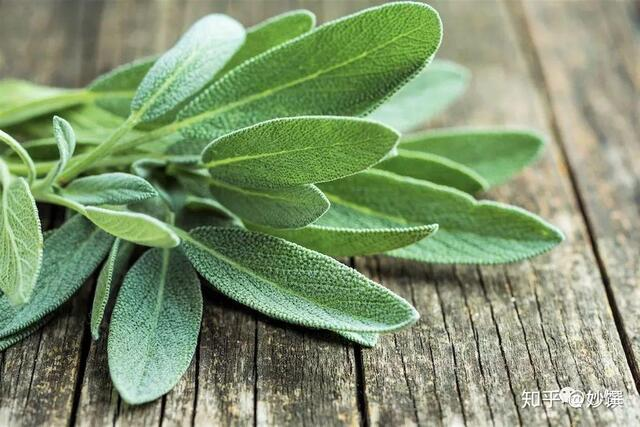
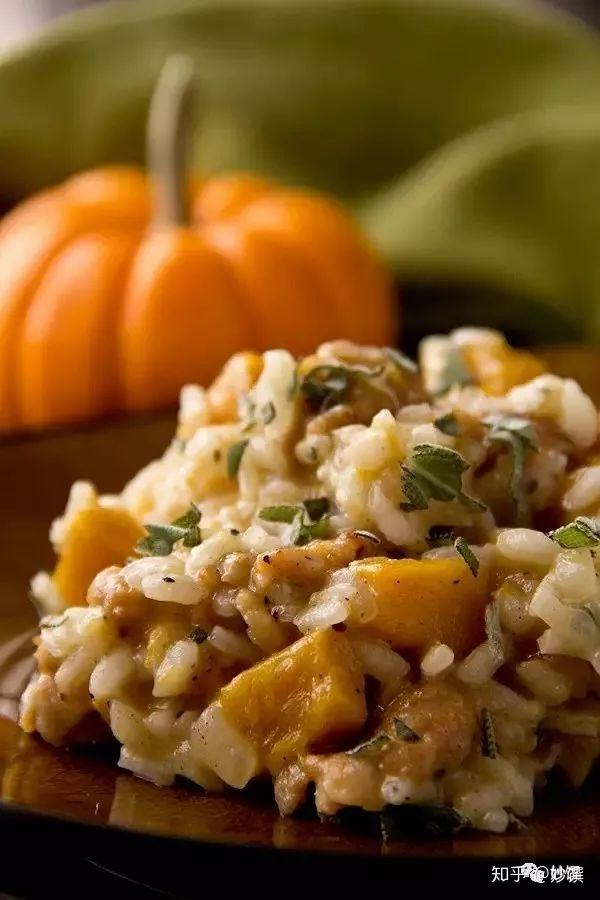

欧洲有句谚语：“家有鼠尾草，医生不用找。” 它是欧洲中世纪以来备受推崇的天然草药。鼠尾草绿色中泛着淡灰，表面布层绒毛，与鼠尾有点像，气味强烈有解腻的功效，西餐烹饪里喜欢用它与油腻的东西搭配。
除了用于烹饪，它在德国还是很受欢迎的日常伴侣，超市药店都能找到鼠尾草润喉糖和鼠尾草茶。在口感上，它有青草的香气和淡淡的苦味。

▲ 新鲜鼠尾草，图源自网络。
气味：本味浓烈，夹杂些樟脑气味，烹饪后别有一股温润风味。
应用：烹调肉类，缓和腥味；意式燉饭；可泡茶；可做润喉糖。

▲ 意式南瓜燉饭，图源自网络。
意式燉饭口感浓滑却味道较淡，鼠尾草的香气很提味。